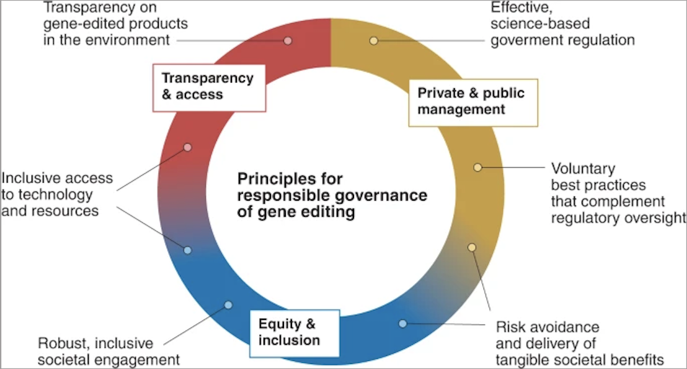

Responsible governance of gene editing in agriculture and the environment
Doria R.Gordon & Gregory Jaffe
Received 21 Aug 2021, Accepted 29 Oct 2021, Published online: 10 Dec 2021
To the Editor — Gene editing and other biotechnologies have the potential to address urgent dilemmas in
the environment, human health and food security. However, these technologies also raise potential for societal concerns, environmental and health risks, and conflicts with cultural and spiritual values. Previous experience with the introduction of genetically modified organisms (GMOs) into the food system has in some
instances resulted in public mistrust, underscoring the need for greater transparency, better governance
and improved oversight of the deployment of these technologies.
As representatives of non-governmental organizations (NGOs), we recognize the potential societal benefits
of gene-editing technologies, while acknowledging their potential risks. However, we contend that the
United States has inadequate regulatory oversight to address concerns presented by biotechnology7,8,9.
Thus far, efforts to articulate principles that might govern the safe development and release of biotech products have largely taken place in the academic domain, have omitted key stakeholder endorsements and
have lacked a strategy for influencing governance and consumer acceptance. In contrast, NGOs focused
on consumer and environmental advocacy, with millions of members, actively engage with government regulators and industry stakeholders. Like other authors6,7, we are concerned that gene-edited products could
follow the same path as GMOs, which suffer from limited products, exclusive development, and substantial
consumer avoidance and skepticism. These factors lead to the potential societal benefits of such products
remaining unrealized. Our principles could apply to products produced with almost any technology, but we
have focused on genetic editing because of the following: this methodology has the potential for safe and
beneficial applications; new products are being developed rapidly; regulation and introduction of new products into commerce is controversial (unlike introduction of conventional crops produced using mutagenesis); and the lack of appropriate governance could lead to unintended environmental consequences or severely limit its use. Therefore, here we offer governance principles as a starting point and roadmap for collaboration among many sectors (scientists, product developers, policymakers, regulators, companies, civil
society, and consumers) that could jointly develop a pathway to the responsible innovation, governance,
and deployment of gene-editing technology.
Advancing this dialog is timely because several developers are poised to introduce gene-edited products
into commerce5. In 2020, under an Executive Order to “streamline processes and remove overly burdensome regulations,” the US Department of Agriculture substantially deregulated gene-edited plants and proposed a similarly minimal oversight system for gene-edited animals. Without sufficient governance,
gene-edited products released into the environment may pose risks to biodiversity, and even the most
benign innovations could lack public trust6,10. In addition to the voluntary solutions proposed by some authors (for example, ref. 9), the principles we endorse here include policies, such as the introduction of a national registry of gene-editing applications in use in the United States, that are critical to managing risk and
fostering public trust.
The Biden administration in the United States will likely take a fresh look at biotech oversight and decide
whether to continue or reverse deregulation. They will look to our organizations for constructive approaches
and to bring the perspectives and support of our many members. Therefore, our principles (Fig. 1 and Table
1) for gene-editing governance in the public and private sectors focus on the US context, recognizing that
governance in the United States can influence outcomes elsewhere. Gene-editing techniques, while often
allowing more rapid and precise genetic alterations than earlier technologies11, are not independent of the
broader social, ecological and economic histories, contexts and debates related to earlier genetic engineering technologies, including perceived prior harms and failures of biotechnologies to live up to promises to
deliver broad societal benefit.

We have focused on gene-editing applications in agriculture and the environment in developing these principles, both because CRISPR–Cas and other advances are supporting rapid development of new products
and because we see the current governance and regulatory framework as inadequate for addressing applications of these technologies9,12. Since these products are being, and will continue to be, developed and
applied in agriculture and the environment, we must consider how this activity occurs and under whose
management, oversight and stewardship. In the text below, we outline six principles for responsible governance
Principle 1: risk avoidance and delivery of tangible societal benefits
Gene editing should be safely and ethically developed and transparently deployed. Safeguards should be
in place that ensure gene editing is carefully developed and then applied and stewarded to manage for potential risks to agriculture, food systems, human health, non-human species and the environment. Regulatory bodies need to assess the potential risks of a particular use or application of gene editing using a science-based risk assessment. For example, risks may be associated with unintended non-target changes in
the genome or environmental impacts of toxicity, gene flow and invasion2,12. Where the potential risks associated with a product are substantial and cannot be adequately managed, that product should not be approved for use and released into the environment.
At the same time, gene editing should be inclusively developed. Product developers should consider, with
the input of societal stakeholders7,8,9,13, how gene editing could be applied to support a broad range of
benefits. These might include ecological, social and climate resilience; biological diversity; natural resources; human and animal health and welfare; economic and rural development; equitable societal outcomes;
context-specific cultural values; energy security; and food sovereignty. Risks and benefits should be
weighed against the counterfactuals of continuing with business as usual against the backdrop of a changing climate and growing human population
Principle 2: robust, inclusive societal engagement
Technology developers should take proactive, inclusive steps to identify, engage, and incorporate input of
diverse communities, stakeholders, and publics at an early stage in the research and development cycle of
individual products2,7,8,9,13. Transparent, respectful dialog should incorporate diverse viewpoints and the
preferences of different regions and cultures, including those that do not support the proposed applications.
Developers should strive to create solutions acceptable and responsive to those engaged.
The regulatory process should engage proactively, transparently and meaningfully with stakeholders to
help assess potential risks and benefits. Engagement should extend beyond traditional written comment
processes and strive to maintain public and consumer trust in gene editing and its governance7,8,9,13.
Sponsor


Advertisement